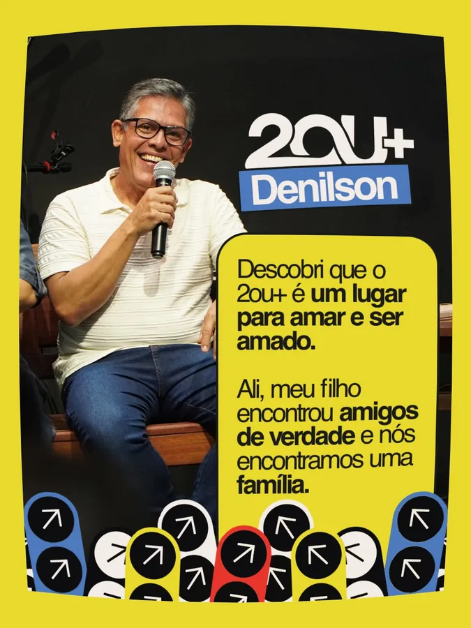
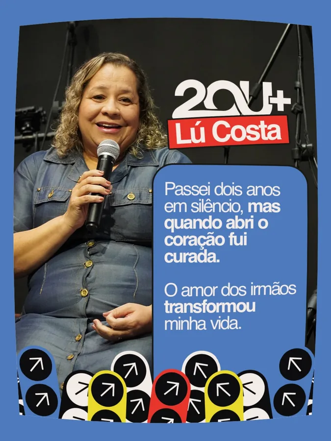
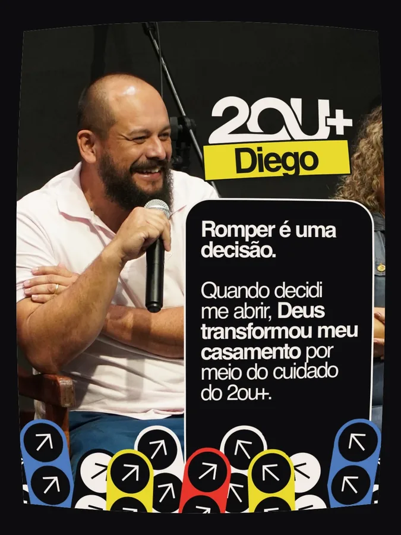
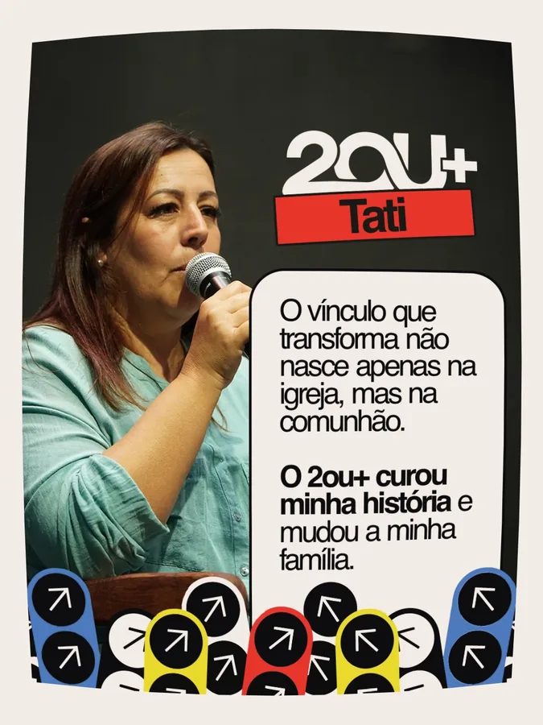
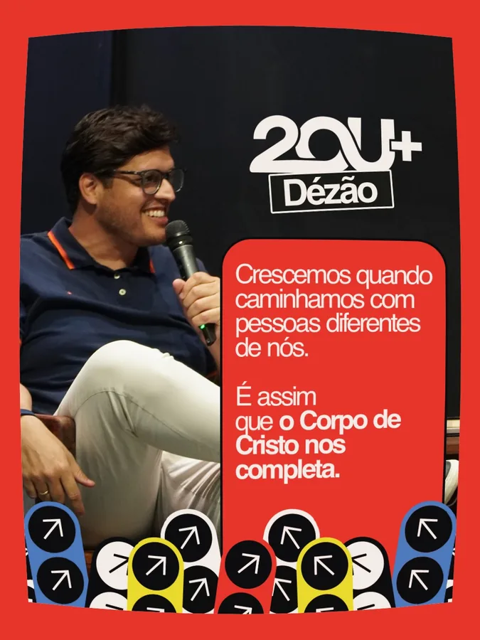
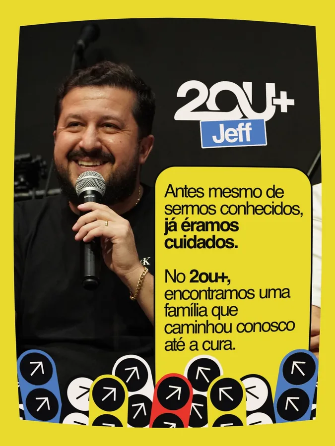
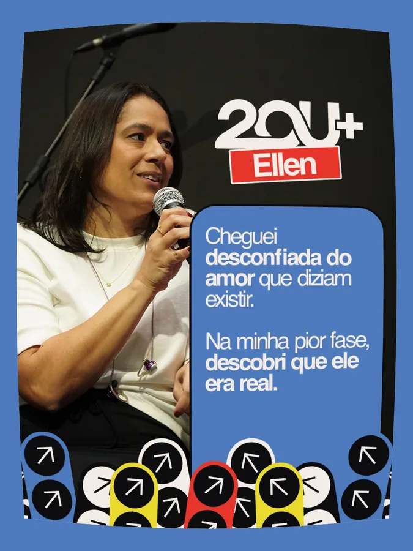

2ou+ A · bairro Solteiros
Quintas · 20h · ≈ 1,2 km de você

A Poiema começou com uma mesa. Virou um 2ou+. Hoje é uma igreja, e continua se encontrando do mesmo jeito: em casas abertas, com gente do seu bairro, durante a semana.
Onde estiverem dois ou três reunidos em meu nome, ali estou eu no meio deles.Mateus 18:20

Nossa história
Tudo começou com pessoas sentadas em volta de uma mesa, abrindo a Bíblia e a vida.
A mesa se multiplicou em casas. Dois ou mais reunidos em nome de Jesus.
Uma igreja que voltou à essência: os domingos juntos e a vida acontecendo nas casas.
Datas e marcos da história: confirmar com a liderança.
Por dentro de um 2ou+
Toque nos pontos da casa.
Alguém abre a casa. Talvez a sua casa seja a resposta para alguém.
Comer junto é por onde tudo começa. A Poiema nasceu assim: em volta de uma mesa.
A Bíblia aberta no meio da sala, lida e conversada sem pressa.
Gente que ora uns pelos outros e se lembra de você durante a semana.
Histórias de quem abriu a porta







Encontre o seu
Conta onde você mora e a gente te apresenta a quem já está guardando um lugar pra você.
Resultado da busca
Dias e horários são exemplos. Os tipos de 2ou+ são reais: Casais, Solteiros, Base e Poieminhas.
Último passo
Deixe um contato e os dias que funcionam para você. O líder do grupo te chama no WhatsApp e combina o primeiro encontro.
Como funciona
Só o CEP ou o bairro. Assim achamos o 2ou+ mais perto de você.
Pelo WhatsApp, para se apresentar e combinar o primeiro encontro.
Numa casa perto da sua, com poucas pessoas e um ambiente acolhedor.
Para entender melhor
Dúvidas
[Resposta a confirmar com a liderança do 2ou+]
[Resposta a confirmar]
[Resposta a confirmar]
[Resposta a confirmar]
“Não se esqueçam da hospitalidade; foi praticando-a que, sem saber, alguns acolheram anjos.” Hebreus 13:2. Receber um 2ou+ é abrir espaço para pessoas encontrarem Jesus e descobrirem que fazem parte de uma família.